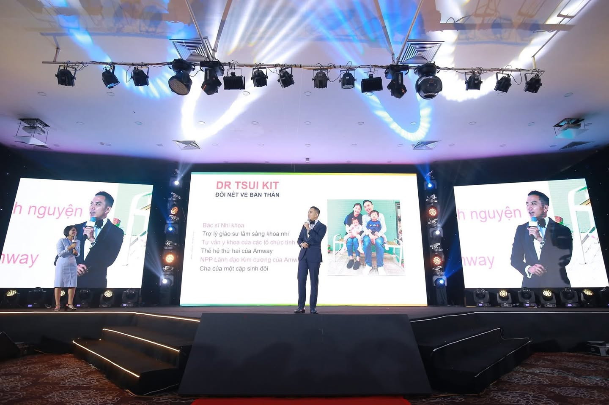

Thế hệ thứ 2 làm Amway: Dr Tsui Kit Double Diamond
Dr Tsui Kit là thế hệ thứ 2 làm Amway, con trai của ba mẹ đã đạt Diamond tại Hồng Kông. Lúc còn nhỏ, anh nghĩ Amway chỉ toàn làm việc với các cô nội trợ và ngày nào cũng vẽ vòng tròn, nên anh không hề có hứng thú với kinh doanh này.
Khi trưởng thành, anh trở thành bác sĩ nhi. Anh yêu công việc của mình vì có thể chữa bệnh cho các em nhỏ. Tuy nhiên, công việc bác sĩ quá mệt mỏi: có những ca trực kéo dài đến 30 tiếng, lịch làm việc thì ngẫu nhiên vì không thể yêu cầu các em chỉ bị bệnh vào ngày chủ nhật.
Anh rất khao khát sự tự do để làm những điều mơ ước, nên quyết định chọn Amway làm part-time. Anh quan niệm Amway và cuộc sống phải song hành với nhau. Cái hay của Amway là không cần phải chọn A hay B, mà là A + B: tận dụng thời gian rảnh để xây thêm một nguồn thu nhập và một con đường tự do.
Với quyết tâm mạnh mẽ, anh đạt được mục tiêu từ Emerald lên EDC chỉ trong 1 năm. Dù là bác sĩ, anh vẫn bị từ chối như thường. Lịch trình của anh dày đặc: gặp bệnh nhân ở bệnh viện, rồi đến phòng mạch, sau đó gặp đối tác, huấn luyện tuyến dưới. Vì vậy anh quản lý thời gian cực kỳ tốt.
Một ngày điển hình trong giai đoạn từ Emerald lên EDC của anh:
- 5 giờ sáng rời khỏi nhà.
- Đến thăm 4 bệnh nhân.
- Làm 2 opp (opportunity presentation).
- Quay lại phòng khám.
- Tiếp tục thăm 2 bệnh nhân.
- Đi center.
- Rồi quay lại thăm bệnh nhân.
- Mỗi ngày gặp ít nhất 3-7 người cho opp.
Anh làm liên tục bởi vì anh có mục tiêu. Không có con đường tắt đâu, chỉ có “cày sấp mặt” thôi. Công việc nào cũng cần nỗ lực như vậy, nhưng Amway có thể thay đổi cuộc đời bạn, vậy tại sao không nỗ lực trong vòng 3-5 năm?
